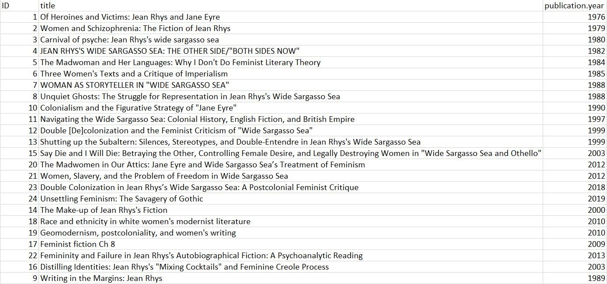
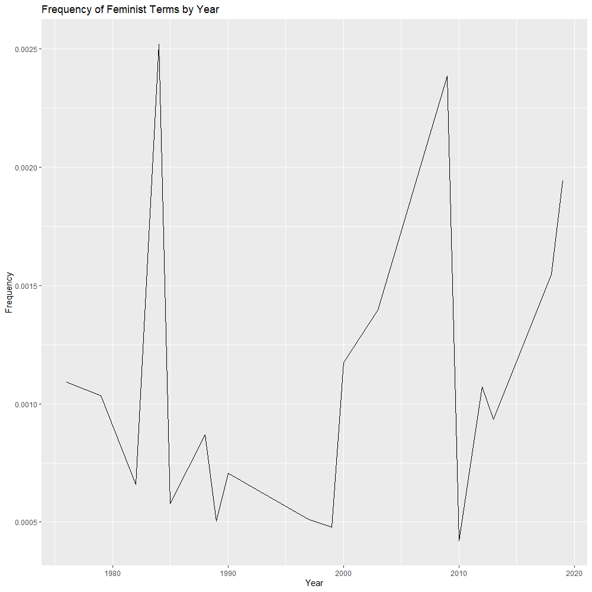

Tracking Trends in Feminist Literary Criticism of Wide Sargasso Sea
by Axel Bax
The goal of this project is to investigate: how has feminist literary criticism has changed over the last 50 years? Can we track these changes computationally?
But why are these questions interesting or important? Even in a relatively short period of time, feminism has adapted as new ideology has been introduced to the methodology: defining feminism based on patriarchy has shifted to independent defining of feminism; expansions on who is represented by the term feminist have occurred; discussions of whether feminism should define women and how have occurred. In short, the interactions of feminist critics are constantly causing the entire field to shift and grow in order to accommodate new perspectives and modes of thought.
By using a single text, we can effectively control the topic that each secondary source focuses on; any differences are due to analytical approach, but not due to text or general topic (since all are fundamentally feminist papers). Wide Sargasso Sea provides an ideal control primary text: it was published in 1966, so about 50 years have elapsed for feminist scholars to write about it; it has multiple geographic locations; it involves multiple races; and it explores class differences. All of these are topics explored by feminist scholars, but not necessarily at the same time.
With this background knowledge of Wide Sargasso Sea and general feminist trends, we can make predictions about how these timelines might look! Rooney refers to the additive approach where a wider range of women are represented (Rooney, 2006). This addition implies that earlier texts will focus more on white, middle-class women than any other group. Over time, the addition of representation of other races, classes, sexual orientations, etc should occur. Therefore whiteness, and middle-classness should remain stable or even decrease over time, while everything else rises to match the early levels of whiteness and middle-classness. Another outcome that is possible with an expansion of identities is that whiteness and middle-classness still dominate, but there is a small rise in the variety of other representations. Graphically, this would be visible by having no instances of minority representation early on, and a rise in the variety of representation, even if the frequency does not rival that of whiteness and middle-classness in contemporary criticism. Rooney also mentions the seeming necessity for feminism to discuss masculinity in order to shine a light on feminist concepts; however, this shifted to a trend towards defining feminism independently from masculinity. It is possible that this shift will be observable in the analysis.
Methodology
This project primarily utilizes digital techniques, which is uncommon, but growing in the field of scholarly literature analysis. This choice, compared to more qualitative approaches, is the most effective way to present unbiased, long-term trends in the corpus. While the corpus is small enough for a single person to read in a relatively short period of time, the primary challenge of this corpus is the relatively long timescale of 50 years. To track those changes and weigh the difference one year could make versus five years is at least challenging for a researcher to do, but impossible without significant bias.
Another benefit of using digital techniques, is that they paint broad strokes for what is an otherwise unexplored area. By looking at everything and noticing anomalies or trends in the data, a roadmap can be made. The scholars that follow after me will therefore not have to climb the entire mountain; instead, they can focus their energy on the large landmarks to expand upon my work in the future. Starting with digital techniques to identify larger trends, then following up with qualitative techniques to examine the smaller trends provides for a more efficient research method overall. Thus I encourage further examination of this project by others.
This corpus was generated by searching JSTOR for feminist texts that also referenced Wide Sargasso Sea. Once several texts were assimilated, the bibliographies of those texts were also examined for other texts that focused on feminist critique of Wide Sargasso Sea. These files were then converted to plain text and loaded into R for data analysis.
Word frequency analysis is one of the most basic forms of text analysis. This method turns a text, or group of texts, into a spreadsheet which shows the number of occurrences (n) of a particular word in a particular text. Various other measurements can be inferred from this, such as rarity or how words pair with other words, but basic word frequency was more useful for this project. For each of the five topics that were graphed, a wordlist was generated of terms that match that topic. Most of these terms were generated not from a specific paper or website, but an amalgamation of the terms I ran across in researching this project that seemed common.
Sentiment analysis is rather simple, in that it examines exactly what it advertises: positive and negative sentiment in a text or group of texts. There are several different people or groups who have compiled sentiment data, which they have made available to be used in R packages (see citational information). The AFINN lexicon from Finn Årup Nielsen was used for this project, although the nrc lexicon from Saif Mohammad and Peter Turney was also explored, but not included in the analysis. The AFINN lexicon contains a list of words and a sentiment value for each word, ranged from -5 to 5. These values can be analyzed to find the average sentiment for a text, part of a text, or collection of texts. I matched the AFINN words with the list of words in my corpus, and then averaged the sentiment for each text, year, and country.
Topic modeling is another method of text analysis which links word similarity, and then sorts words into a specified number of groups which it identifies as distinct topics (although topics may have some overlapping words). This project initially seemed like an ideal one to perform topic modeling on; after all, we want to investigate the different subtopics of feminist critique across many different texts. However, the general topic is so pervasive that the topic modeling analysis was not able to reliably detect subtopics that looked distinctly different from each other, and so this method was retracted from the analysis.
The culmination of these methods is an interactive timeline (below). The controls for this timeline are presented in a matrix. As you go from left to right, you can vary the topic being analyzed (gender, race, critical terms, sentiment, and feminist terms, respectively). As you go from top to bottom, you can vary the x-axis of the graphs (text, year, and country of publication, respectively). This interactive timeline provides 15 different ways of understanding trends in terminology used by feminist scholars over the last 50 years, providing as many avenues as possible for identifying interesting outliers and trends.
Timeline of Changes
Controls: The Y-axis varies the type of timeline. The X-axis varies the type of data visible.
[INSERT TIMELINE TEXT HERE]
Analysis
While notable features of each graph can be viewed in their respective caption, there are some general trends that are worth noting, and seeing how they compare to what historical accounts of feminism suggest. The idea that expansion of representation over time occurs can be seen in the Frequency of Racial Terms by Text graph. Early texts focus mostly on blackness or whiteness, sometimes including other racial terms, while later texts frequently included all racial terms, and overall frequency of whiteness decreased. Additionally, in Frequency of Critical Terms by Text, references to geography, postcolonialism, race and class (although weaker than the other three) all increased over time as well, showing that this expansion is beyond simple reference to race, and encompasses other ideas of representation as well. There is also a general decline in the amount of masculine terms used over time, as well as decrease in neutral terms, suggesting more of a focus on feminist ideals as Rooney suggested. In the geographic analyses, trends related to colonialism become evident, especially when examining frequency of racial and critical terms. This tracks with a trend beyond feminism, which is the expanding attention toward postcolonialism and how literature changes in a postcolonial society.
Reading this, you may wonder where the representation is for queer feminism, trans feminism, and lesbian feminism. Unfortunately, these texts did not have a large enough focus upon these topics for them to be as significant as race or gender, for example. To verify this, I checked the frequency of terms that relate to these disciplines. The terms gay, trans, and queer all appeared less than 10 times each across all texts. The term lesbian appeared 11 times, but 9 were within a single text, so it also did not have a high enough frequency to be useful. However, if we consider the content of Wide Sargasso Sea, this lack of representation makes sense. The primary text tackles issues such as race, gender, class, and geography rather head on. However, issues related to queerness and transness are not nearly as pervasive in Wide Sargasso Sea, if present at all.
Other useful visualizations can be viewed below:
 